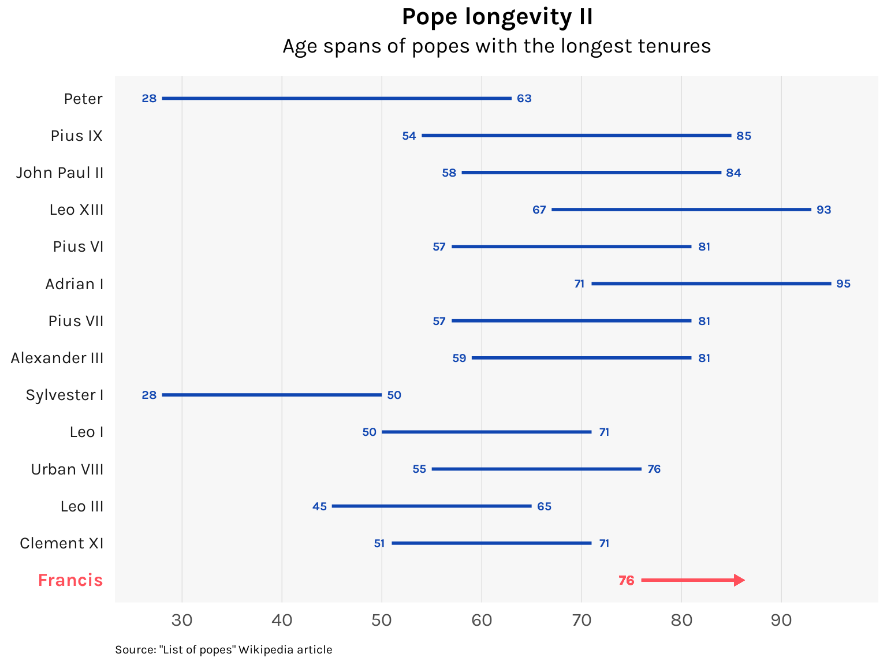

At 86, the current supreme pontiff is making his mark as one of history’s oldest. How long can he go on?
histogram
lollipop
survival
Published
February 6, 2023
Next month, Pope Francis will mark his 10th year in the papacy. Will he make it to his 15th year? His 20th? He is already 86: the last pope to reach this age was Leo XIII, who died in 1903 at the age of 93.1 In fact, by my count, only 15 of the 264 popes in history remained pope past their 86th birthday, and only four since the year 1500. Francis is in very small company.
I thought I’d visualize this using data scraped from the Wikipedia article “List of popes”. The resulting dataset popes.csv runs from Peter to Francis and excludes all the antipopes (who I call the nopes) for a total of 267 rows and 264 unique popes. Check this repository for more info.
Though Francis is an old pope, his tenure so far of 10 years is less remarkable. Almost a third of all popes lasted for 10 years or more. And getting another decade in will be tough for Francis as he entered the papacy late in life — 76 years old. Of the popes with tenures of 20 years or more, most started before the age of 60, as the chart below shows.
Code
popes %>%filter(tenure >=20) %>%bind_rows(tibble(name_full ="Francis", tenure =0)) %>%arrange(tenure) %>%mutate(name_full =factor(name_full, name_full)) %>%ggplot() +geom_segment(aes(x = age_start, xend = age_end, y = name_full, yend = name_full),linewidth =1, color ="#1046b1" ) +geom_text(aes(x = age_start, y = name_full, label = age_start),family ="karla",size =8/ .pt, fontface ="bold", color ="#1046b1", nudge_x =-1.25 ) +geom_text(aes(x = age_end, y = name_full, label = age_end),family ="karla",size =8/ .pt, fontface ="bold", color ="#1046b1", nudge_x =1.25 ) +geom_segment(x =76, xend =86, y ="Francis", yend ="Francis",linewidth =1, linejoin ="mitre", color ="#ff505b",arrow =arrow(angle =30, length =unit(0.15, "cm"), type ="closed") ) +geom_text(x =74.5, y ="Francis", label ="76",family ="karla",size =9/ .pt, fontface ="bold", color ="#ff505b" ) +# Labelslabs(title ="Pope longevity II",subtitle ="Age spans of popes with the longest tenures",caption ="Source: \"List of popes\" Wikipedia article" ) +scale_x_continuous(breaks =seq(30, 90, 10)) +theme_minimal(base_family ="karla") +theme(plot.title =element_text(size =16, face ="bold", hjust = .5),plot.subtitle =element_text(size =14, hjust = .5, margin =margin(b =12)),plot.caption =element_text(size =8, hjust =0, margin =margin(t =10)),axis.ticks =element_blank(),axis.title =element_blank(),axis.text.x =element_text(size =12, margin =margin(t =5)),axis.text.y =element_text(size =c(rep(11, 14), 12) %>%rev(),face =c(rep("plain", 13), "bold") %>%rev(),color =c(rep("gray10", 13), "#ff505b") %>%rev(),margin =margin(r =5) ),panel.background =element_rect(fill ="gray97", color =NA),panel.grid.major.x =element_line(linewidth = .15, color ="gray80"),panel.grid.major.y =element_blank(),panel.grid.minor.x =element_blank(),panel.grid.minor.y =element_blank() )

We can use a bit of survival analysis to estimate the probability of a pope making it to their 20th year, controlled for whether they started relatively young (below 60 years old) or relatively old (60 and above). The Kaplan-Meier estimates are computed using the survival package and plotted using the ggsurvfit package.
Based on these estimates, the young group has a 33.1% probability of reaching their 10th year while the old group has only a 23.9% probability. On the other hand, the young group has a 6.3% probability of reaching their 20th year while the old group has a 2.3% chance. It should be noted though that the estimates for the old group have a high amount of uncertainty, mainly because few old popes make it to their 20th year.
If Francis completes his second decade as pope, he would be 96. The odds are against him, but it wouldn’t be unheard of. Pope Agatho, elected pope in 678 AD at the age of 100, reigned until his death at age 103.
Footnotes
Although Benedict XVI lived to 95, he resigned the papacy when he was 85.↩︎